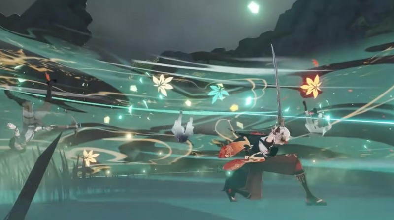
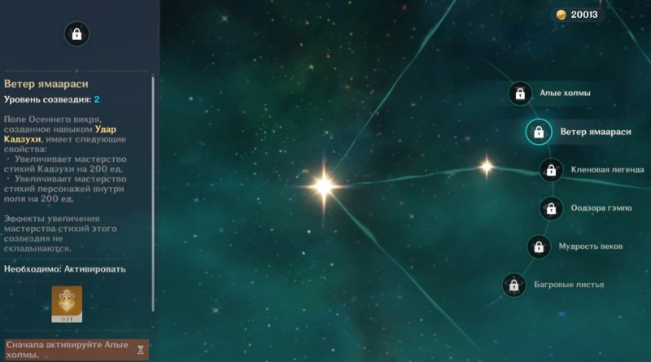

В Genshin Impact Кадзуха является 5-звездочным персонажем, который мастерски обращается одноручным мечом и относится к Анемо стихии. В команде он может играть роль основного или второстепенного дамагера (с уклоном в поддержку). В этом гайде мы расскажем про его лучшее оружие, артефакты и билды, а также дадим советы по прокачке и подбору оптимальной команды.
Этот мечник является весьма универсальным персонажем, который может усилить своих союзников или самостоятельно разобраться с большими группами противников. Все благодаря ряду его преимуществ:
Может контролировать поле боя с помощью элементального навыка.
Прекрасно справляется с ролью второстепенного дамагера, так как эффект от его взрыва стихии остается даже после переключения на другого персонажа.
Способен наносить Анемо урон по площади, создавая реакцию Рассеивание, которая дополнительно повышает повреждения от других стихий.
Имеет неплохие базовые значения защиты и здоровья.
Наносит мощные атаки с воздуха.
Если же рассматривать его недостатки, то новичкам он может показаться немного сложным в случае использования в качестве основного дамагера из-за его высокой мобильности и необходимости постоянно контролировать толпу врагов. К минусам можно также отнести зависимость от мастерства стихии.
При использовании обычной атаки ронин-самурай наносит до 5 быстрых ударов, а заряженной – делает 2 мощных взмаха мечом (расходуется выносливость). Однако наибольший интерес вызывает его атака в падении, которая при использовании элементального умения приводит к осуществлению удара под названием Мидарэ рандзан.
В рамках этой атаки физический урон конвертируется в Анемо и создается воздушный поток, втягивающий в себя ближайших противников. Это отличный момент для переключения на Пиро, Крио, Гидро или Электро героя и применения его ульты.
Элементальная способность «Тихаябуру» позволяет притягивать мобов и объекты к Кадзухе, а затем подкидывать их в воздух, нанося Анепо повреждения (при долгом нажатии кнопки навыка можно увеличить площадь удара). Возникшие потоки ветра поднимут и самого мечника. Затем в течение следующих 10 секунд он может выполнить вышеупомянутый Мидарэ рандзан, нанеся дополнительный урон.
Взрыв стихии «Удар Кадзухи» наносит Анемо повреждения по огромной площади. Кроме того, на земле остается след от удара под названием Осенний вихрь, периодически бьющий врагов Анемо уроном. При взаимодействии с другими элементами, за исключением Гео, он наносит дополнительные повреждения этой стихией. Таким образом, после ее применения следует переключиться на персонажа соответствующего элемента, чтобы нанести врагам повышенный урон.
Кадзуха также обладает тремя неплохими пассивными умениями:
Шелест ветра (базовый) – снижает затраты выносливости на быстрый бег на 20 процентов у активного героя. Эффект не складывается с бонусами аналогичных пассивок.
Летучий клинок (2-й этап возвышения) – Мидарэ рандзан наносит дополнительные 200 процентов Пиро, Крио, Электро или Гидро урона при взаимодействии с одним из этих элементов.
Поэзия песен ветра (4-й этап возвышения) – реакция Рассеивания повышает элементальный урон остальных участников команды на 0,03 процента за каждую единицу мастерства стихий Кадзухи на протяжении 8 секунд. Бонусы от различных стихий могут складываться.
Для их открытия требуется удача персонажа, которая добывается путем получения копий героя в рамках Молитв. Поэтому данный процесс во многом базируется на рандоме. Вам сильно повезет, если вы доберетесь до 6-го созвездия, однако первые два тоже крайне полезны.
Алые холмы – сокращает кулдаун «Тихаябуру» на 10 процентов. Применение «Удара Кадзухи» приводит к полному сбросу времени его отката.
Ветер Ямаараси – сформированное «Ударом Кадзухи» поле Осеннего вихря, получает ряд уникальных эффектов: повышает мастерство стихий у ронина и всех персонажей, находящихся внутри поля, на 200 единиц. Эффекты от увеличения данного показателя не суммируются.
Кленовая легенда – уровень «Тихаябуру» возрастает на 3 (максимум до 15).
Оодзора гэмпо – при падении энергии до 45 единиц «Тихаябуру» начинает восстанавливать персонажу 3 или 4 единицы энергии (быстрое или долгое нажатие). При полете на глайдере за одну секунду восстанавливаются 2 единицы энергии.
Мудрость веков – уровень «Удара Кадзухи» возрастает на 3 (максимум до 15).
Багровые листья – применение элементальных умений наделяет оружие персонажа Анемо инфузией на 5 секунд. При этом на каждую единицу мастерства стихий урон от обычных ударов, включая атаки с воздуха, возрастает на 0,2 процента.
Основной анемо ДПС.В этом случае необходимо максимизировать наносимый им Анемо урон. Сделать это можно путем использования следующих мечей.
Клятва свободы (5-звездочный; мастерство стихии) – при возникновении стихийной реакции создается 1 талисман воодушевления. Он может появиться раз в 0,5 секунды. При сборе 2 талисманов у ближайших участников команды возрастает урон при осуществлении обычных ударов на 12 секунд. Следующие талисманы можно будет начать собирать только через 20 секунд после активации данного эффекта.
Стальное жало (4-звездочный; мастерство стихии) – при нанесении стихийного урона все повреждения возрастают на 6 процентов на 6 секунд. Эффект суммируется до двух раз и возникает не чаще одного раза в секунду.
Вспышка во тьме (4-звездочный; мастерство стихии) – повышает урон на 12 процентов. После получения повреждений эффект исчезает на 5 секунд.
Что касается артефактов, то необходимо выбрать следующие параметры: критический урон и шанс крита / %АТК или мастерство стихий / Анемо урон. Собрать же нужно вот этот сет:
Изумрудная тень: 2 предмета – повышают Анемо урон на 15 процентов; 4 предмета – повреждения от Рассеивания возрастают на 60 процентов, а при его контакте с другой стихией сопротивление к соответствующему элементу у врагов снижается на 40 процентов на 10 секунд. Этот набор можно добыть в подземелье «Долина воспоминаний».
Второстепенный Анемо DPS
Во многом похож на предыдущий билд, однако больше направлен на развитие ульты и восстановление энергии. В качестве меча советуем взять:
Клятва свободы (5-звездочный; мастерство стихии) – при возникновении стихийной реакции создается 1 талисман воодушевления. Он может появиться раз в 0,5 секунды. При сборе 2 талисманов у ближайших участников команды возрастает урон при осуществлении обычных ударов на 12 секунд. Следующие талисманы можно будет начать собирать только через 20 секунд после активации данного эффекта.
Небесный меч (5-звездочный; восстановление энергии) – повышает вероятность нанесения критических атак на 4 процента. При использовании взрыва стихии скорость атаки и перемещения возрастает на 10 процентов, а заряженные и простые удары бьют на 20 процентов сильнее. Длительность эффектов составляет 12 секунд.
Меч Фавония (4-звездочный; восстановление энергии) – при нанесении критов с 60-процентной вероятностью создаются стихийные частицы, восстанавливающие 6 единиц энергии. Эффект проявляется раз в 12 секунд.
При сборе артефактов основное внимание следует уделить HP% / %АТК или мастерство стихии / восстановление энергии. В качестве сета можно снова использовать «Изумрудную тень». При его отсутствии можете надеть:
Церемония древней знати: 2 предмета – повышают повреждения от стихийного взрыва на 20 процентов. Использование этой способности увеличивает показатель атаки всех членов команды на 20 процентов (длится 12 секунд). Можно добыть в подземелье «Чистая вода и горная пещера».
Инструктор; 2 предмета – повышают мастерство стихий на 80 единиц; 4 предмета – создание стихийной реакции повышает мастерство стихий у всех участников команды на 120 единиц на 8 секунд. Выбивается из элитных боссов.